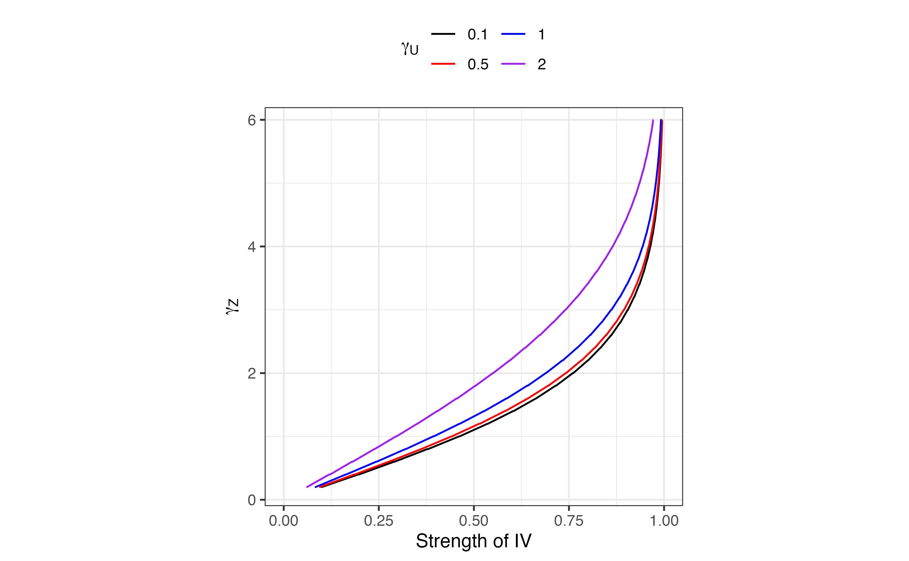
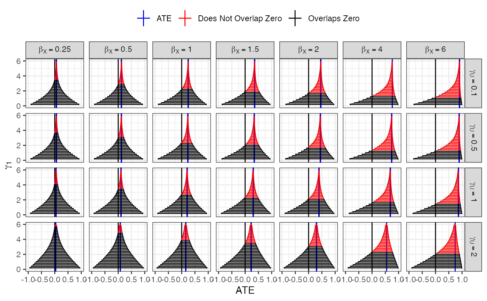
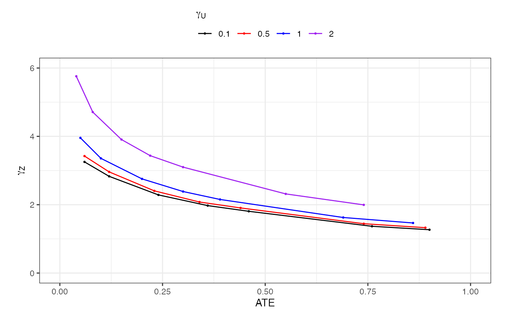

This document generates results and figures based on the “power analysis” described in vignettes("power_sims")
We load tidyverse, read in saved results, and create a new object with a few list columns unnested. First six rows are displayed below. This object has one row for each combination of coefficients considered, and each rows contains both values of \(P(X = 1 | Z = z)\) (in column thetas), \(P(Y = 1 | Z = z)\) (in column gammas), ATE, and upper and lower two-sample bounds.
library(tidyverse) bounds_and_ATE <- read_rds(here::here("data/power_bounds_and_ATE_combined.Rds")) bounds_and_ATE_unnested <- bounds_and_ATE %>% unnest_wider(sum_stats) %>% unnest_wider(bounds) head(bounds_and_ATE_unnested)
## # A tibble: 6 x 11
## indIVs_on_X X_on_Y U_on_XY i seed gammas thetas ATE get_bounds_res
## <dbl> <dbl> <dbl> <int> <dbl> <list> <list> <dbl> <list>
## 1 0.2 0.25 0.1 1 3.59e4 <dbl … <dbl … 0.0623 <named list […
## 2 0.2 0.25 0.5 2 8.15e6 <dbl … <dbl … 0.0589 <named list […
## 3 0.2 0.25 1 3 2.27e6 <dbl … <dbl … 0.0516 <named list […
## 4 0.2 0.25 2 4 6.35e6 <dbl … <dbl … 0.0379 <named list […
## 5 0.2 0.5 0.1 5 8.61e6 <dbl … <dbl … 0.124 <named list […
## 6 0.2 0.5 0.5 6 2.50e5 <dbl … <dbl … 0.118 <named list […
## # … with 2 more variables: lower <dbl>, upper <dbl>For use in our manuscript, we create a table with all the unique values used for the different coefficients.
all_combinations_of_coefs <- bounds_and_ATE %>% arrange(X_on_Y, indIVs_on_X, U_on_XY) %>% select(`$\\gamma_1$` = indIVs_on_X, `$\\beta_1$` = X_on_Y, `$\\gamma_U$` = U_on_XY) %>% pivot_longer(cols = everything()) %>% unique() %>% group_by(Coefficient = name) %>% summarize(Values = paste(value, collapse = ", ")) %>% pivot_wider(names_from = Coefficient, values_from = Values)
## `summarise()` ungrouping output (override with `.groups` argument)pander::pander(all_combinations_of_coefs)
| \(\beta_1\) | \(\gamma_1\) | \(\gamma_U\) |
|---|---|---|
| 0.25, 0.5, 1, 1.5, 2, 4, 6 | 0.2, 0.4, 0.6, 0.8, 1, 1.2, 1.4, 1.6, 1.8, 2, 2.2, 2.4, 2.6, 2.8, 3, 3.2, 3.4, 3.6, 3.8, 4, 4.2, 4.4, 4.6, 4.8, 5, 5.2, 5.4, 5.6, 5.8, 6 | 0.1, 0.5, 1, 2 |
We save this in latex format:
kableExtra::kable(all_combinations_of_coefs, format = "latex", escape = FALSE, booktabs = TRUE) %>% kableExtra::column_spec(2, width = "1.5in") %>% write_file(file = here::here("tables", "sim_coefficients_table.tex"))
Our first plot compares \(\gamma_1\) and resulting strength.
(coefs_vs_strength <- bounds_and_ATE_unnested %>% mutate(strength = map_dbl(thetas, ~.x[3] - .x[1]), U_on_XY = as.character(U_on_XY)) %>% ggplot(aes(y = indIVs_on_X, x = strength, color = U_on_XY)) + geom_line() + scale_x_continuous(limits = c(0, 1)) + scale_y_continuous(limits = c(0, 6), expand = expansion(mult = 0, add = c(0.1, 0.2))) + scale_color_manual(values = c("black", "red", "blue", "purple")) + labs(color = bquote(gamma[U]), x = "Strength of IV", y = bquote(gamma[Z])) + guides(color = guide_legend(nrow = 2)) + coord_fixed(ratio = 1/6) + theme_bw() + theme(legend.position = "top"))

ggsave(here::here("figures/MR_coefs_vs_strength.png"), coefs_vs_strength, dpi = 300, width = 4, height = 4.7)
The second plot shows all the two-sample bounds and ATEs.
(pretty_plot <- bounds_and_ATE_unnested %>% mutate(zero = if_else(lower < 0 & upper > 0, "Overlaps Zero", "Does Not Overlap Zero"), X_on_Y = paste0("beta[X] ==", X_on_Y), U_on_XY = paste0("gamma[U] ==", U_on_XY)) %>% arrange(desc(lower)) %>% ggplot(aes(y = indIVs_on_X, color = zero)) + geom_smooth(se = FALSE, aes(x = upper, group = "loess"), color = "black", method = "loess", formula = y ~ x, size = 0.2) + geom_smooth(se = FALSE, aes(x = lower, group = "loess"), color = "black", method = "loess", formula = y ~ x, size = 0.2) + geom_vline(xintercept = 0) + geom_vline(aes(xintercept = ATE, color = "ATE")) + geom_errorbar(aes(xmin = lower, xmax = upper)) + facet_grid(U_on_XY ~ X_on_Y, labeller = label_parsed) + lims(y = c(0, 6), x = c(-1, 1)) + scale_color_manual( values = c("Overlaps Zero" = "black", "Does Not Overlap Zero" = "red", "ATE" = "blue") ) + labs( y = bquote(gamma[1]), x = "ATE", color = "" ) + theme_bw() + theme(legend.position = "top"))

ggsave(here::here("figures/power.png"), pretty_plot, dpi = 300, height = 6, width = 8, units = "in")
The plot above naturally leads to the question: what is the smallest value of \(\gamma_1\) that results in two-sample bounds that do NOT include \(0\)? To answer this question, we model the lower bounds as a function of the coefficients using loess:
loess_model <- bounds_and_ATE_unnested %>% loess(data = ., lower ~ indIVs_on_X + X_on_Y + U_on_XY, span = 0.5)
Next, we find roots for the loess curves (one for each of the panels above).
roots <- bounds_and_ATE_unnested %>% select(X_on_Y, U_on_XY, ATE) %>% mutate(ATE = round(ATE, digits = 2)) %>% # to make sure ATE don't vary due to differences from randomness unique() %>% rowwise() %>% mutate(uniroot_res = list(uniroot(f = function(x) predict(loess_model, newdata = data.frame(indIVs_on_X = x, X_on_Y = X_on_Y, U_on_XY = U_on_XY)), interval = c(0.2, 6))), indIVs_on_X = uniroot_res$root) %>% ungroup() roots %>% select(-uniroot_res) %>% rename("$\\gamma_1$" = indIVs_on_X) %>% pander::pander()
| X_on_Y | U_on_XY | ATE | \(\gamma_1\) |
|---|---|---|---|
| 0.25 | 0.1 | 0.06 | 3.253 |
| 0.25 | 0.5 | 0.06 | 3.423 |
| 0.25 | 1 | 0.05 | 3.956 |
| 0.25 | 2 | 0.04 | 5.759 |
| 0.5 | 0.1 | 0.12 | 2.83 |
| 0.5 | 0.5 | 0.12 | 2.96 |
| 0.5 | 1 | 0.1 | 3.356 |
| 0.5 | 2 | 0.08 | 4.712 |
| 1 | 0.1 | 0.24 | 2.287 |
| 1 | 0.5 | 0.23 | 2.405 |
| 1 | 1 | 0.2 | 2.756 |
| 1 | 2 | 0.15 | 3.907 |
| 1.5 | 0.1 | 0.36 | 1.974 |
| 1.5 | 0.5 | 0.34 | 2.078 |
| 1.5 | 1 | 0.3 | 2.386 |
| 1.5 | 2 | 0.22 | 3.435 |
| 2 | 0.1 | 0.46 | 1.807 |
| 2 | 0.5 | 0.44 | 1.905 |
| 2 | 1 | 0.39 | 2.153 |
| 2 | 2 | 0.3 | 3.1 |
| 4 | 0.1 | 0.76 | 1.369 |
| 4 | 0.5 | 0.74 | 1.444 |
| 4 | 1 | 0.69 | 1.626 |
| 4 | 2 | 0.55 | 2.316 |
| 6 | 0.1 | 0.9 | 1.268 |
| 6 | 0.5 | 0.89 | 1.328 |
| 6 | 1 | 0.86 | 1.465 |
| 6 | 2 | 0.74 | 1.995 |
Using these values, we plot the smallest values of \(\gamma_1\) needed to make sure the two-sample bounds do not include \(0\). We see that rather large values of \(\gamma_1\) are needed in all cases, even for relatively large effect sizes.
(loess_power <- roots %>% ggplot(aes(x = ATE, y = indIVs_on_X, group = U_on_XY, color = as.character(U_on_XY))) + geom_point(size = 0.5) + geom_line() + lims( y = c(0, 6), x = c(0, 1) ) + labs( color = bquote(gamma[U]), y = bquote(gamma[Z]) ) + scale_color_manual(values = c("black", "red", "blue", "purple")) + guides( color = guide_legend(title.position = "top") ) + coord_fixed(ratio = 1/12) + theme_bw() + theme(legend.position = "top"))

ggsave(here::here("figures/loess_power.png"), loess_power, dpi = 300, height = 5, width = 8)